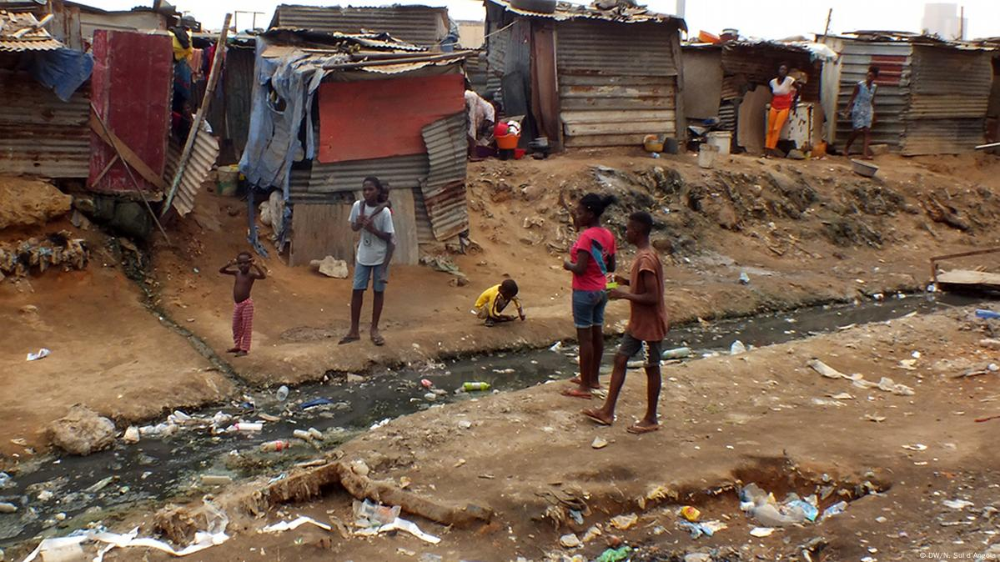

O estilo de vida em Luanda é uma fusão vibrante de culturas africanas e europeias, criando um ambiente único.
Luanda é o principal centro econômico de Angola, fortemente dependente da indústria petrolífera. Empresas de petróleo e gás, tanto nacionais quanto internacionais, têm suas sedes na cidade. Além disso, setores como a construção civil e os serviços financeiros têm crescido, impulsionados por investimentos em infraestrutura e desenvolvimento urbano.
A gastronomia de Luanda é uma fusão de sabores africanos e portugueses. Pratos típicos incluem a moamba de galinha, o funge e o peixe grelhado. Os restaurantes da cidade oferecem tanto a culinária local quanto uma variedade de opções internacionais, refletindo a diversidade cultural de Luanda.
| Informação | Detalhe |
|---|---|
| Área de Luanda | 1.285 km² |
| Densidade Populacional | 4.355.725 habitantes |
| País | Angola |
| Website | https://pt.wikipedia.org/wiki/Luanda |